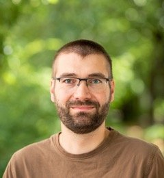

Salar Mohtaj
Postdoc researcher at DFKI, Germany

Stefan Hillmann
Postdoctoral researcher at TU Berlin, Germany

Sebastian Möller
Professor at Technische Universität Berlin, Germany

Georg Groh
Leader of the Social Computing Group at the TU München

Hadi Asghari
Postdoctoral researcher at TU Berlin, Germany

Miriam Anschütz
PhD candidate at Technische Universität München, Germany